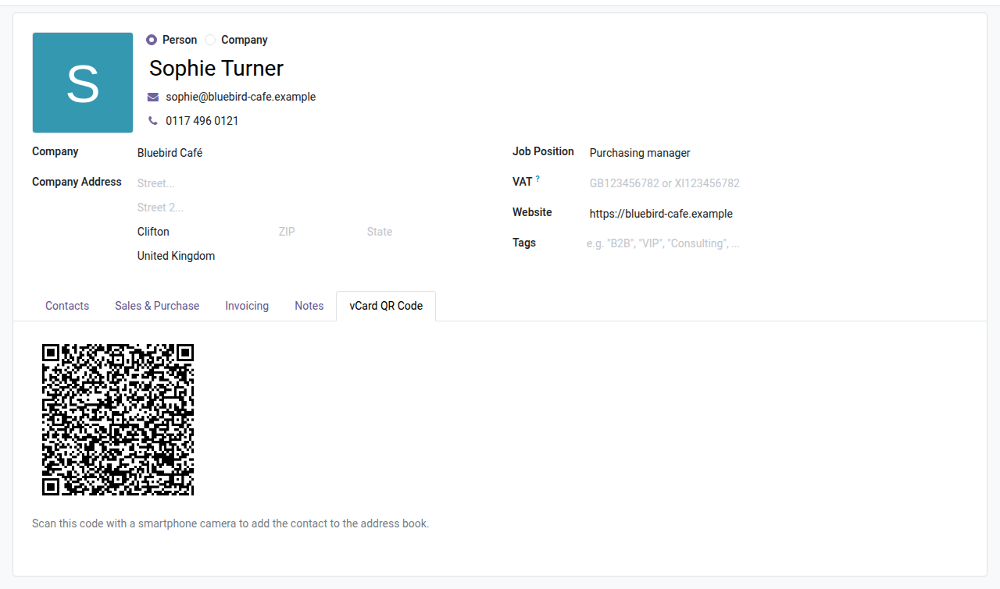

QR vCard Contact
Share any Odoo contact with a single scan — the vCard QR code is generated automatically on the contact form.
At an appointment, a trade show or a customer meeting, exchanging contact details takes time: dictating a number, spelling out an email address, handing over a business card that will end up lost. Your contacts are already in Odoo — why type them in by hand on the other person's phone?
What it adds
- 📲 A vCard QR code ready to scan — each contact form gets a dedicated "QR vCard" tab showing the code, to display right on screen or to print.
- ⚡ Automatic generation, no action needed — the code is recomputed whenever the name, email, phone, job position or website changes; always up to date, zero clicks.
- 📇 Universal vCard 3.0 format — works with the native camera app on iOS and Android: the contact (name, company, job position, email, phone, website) is added to the smartphone's address book in one tap.
- 🔁 Synced with Odoo — the QR code always reflects the Odoo data in real time: new position, new number, new website — the code is regenerated instantly.
Real screenshots
1. A QR code on every contact
The vCard QR Code tab holds name, company, job position, email, phone and website. Scanned with a phone camera, the contact goes straight into the address book.

Why install it
- Zero manual entry for the other person: a one-second scan does the job where dictating takes two minutes.
- No external dependency for the end user — the phone's native camera is enough, no third-party app is required.
- Ideal for salespeople, consultants and field teams who meet customers on site and want to leave a professional, frictionless impression.
- A lightweight module, no configuration: once installed, the QR code appears on every existing and future contact form.
LGPL-3 license — compatible with Odoo 19.0. Requires the qrcode Python library (installed via pip). Support: apps@odooskills.com.